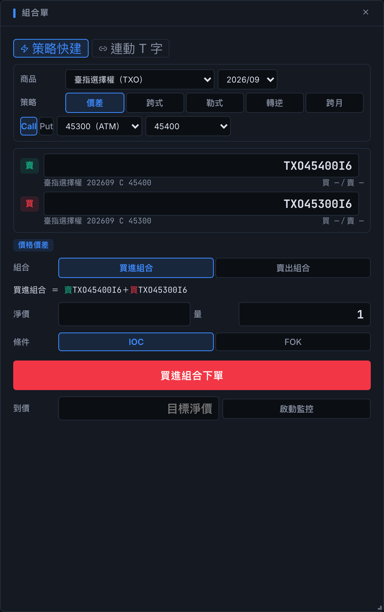

JavaScript 自訂指標
搭配技術分析函式庫，撰寫訊號、驗證輸出，與內建指標一起使用。
專業交易終端，原生 Agent 工作區。
台股、期貨、選擇權。
行情分析、專業下單與策略回測。
macOS · Windows · Linux

從產業與個股貢獻觀察市場，連動 K 線、五檔與下單面板。
依商品、策略與螢幕尺寸，配置你的看盤版面。


熱力圖面積可切換成交值或貢獻，顏色呈現加權漲跌幅。點選產業，展開主要個股排行與貢獻磚牆。


閃電下單支援點價委託與刪單。期貨、選擇權價格依伺服器級距規則對齊；持倉、均價與未實現損益同步顯示。
手動正式下單會動用真實資金；組合單不支援模擬環境。

依商品、月份、策略與履約價建立組合。價差、跨式、勒式、轉逆與跨月策略，直接帶入組合單。
組合單為真實下單；送出前請確認商品、方向與數量。
從價格階梯直接委託，以鋪單管理多檔價位。
組合商品有自己的報價、K 線與五檔，
每腳方向在送出前清楚呈現。
以上為桌面版實際畫面。手動正式下單會動用真實資金；組合單不支援模擬環境。
原生技術指標、自訂程式與含成本的策略回測。
選擇權部位，先看結算損益曲線。


搭配技術分析函式庫，撰寫訊號、驗證輸出，與內建指標一起使用。
納入手續費、稅與滑價，查看績效與交易明細。批次回測為各商品獨立測試。
查詢最新回測的參數、成本假設與逐商品結果。此查詢工具不會啟動回測。
回測與損益試算基於歷史資料或簡化假設，不代表未來績效。
Codex、Claude Code 與 Pi Agent 原生整合。
在 App 內完成安裝、登入、模型選擇與連線測試。
查詢 App 行情與帳戶資料，建立原生格式的指標、策略，依驗證結果修正內容。
保存、續接與分支對話，搭配技能、工具執行紀錄及背景任務。
讀取最新回測的參數、成本與績效摘要，分頁查看各商品結果及交易明細。


以 JavaScript 與技術分析函式庫撰寫指標、進出場訊號；回測納入手續費、稅與滑價。Agent 可讀取目前記憶體中的回測結果，不會透過此工具啟動回測。多商品批次測試為各商品獨立回測，不等同投資組合回測。
React、TypeScript 與 lightweight-charts。
從面板配置到串流與下單介面，直接查看實作。
Web 介面以 AGPL-3.0 開源；桌面層與 AI Agent 為專屬功能。
內建 Shioaji Server、自動更新與伺服器管理。
安裝後，先從模擬環境開始。
13.3 以上 · Apple 簽章與公證
Apple Silicon .dmg Intel .dmgx64
安裝程式 .exe Windows Installer .msix86_64
AppImage .AppImage Debian / Ubuntu .deb RHEL / Fedora .rpm下載連結預設開啟 GitHub 最新版本頁。
01 安裝桌面版下載符合系統與處理器的安裝檔。
02 設定 API Key至 永豐金證券 申請，於 App 內完成伺服器設定。
03 連線模擬環境尚未取得 API Key，也可先使用 AI 助理的設定引導。